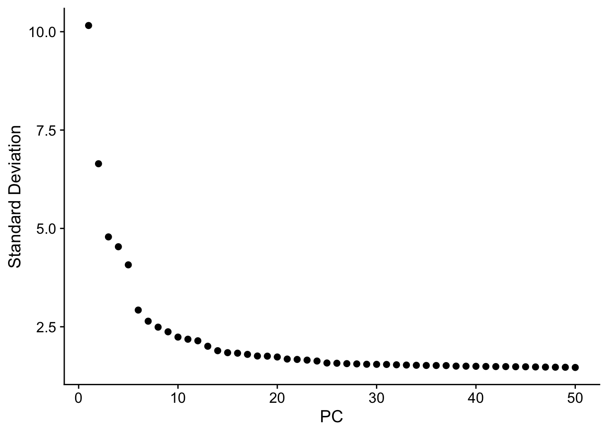
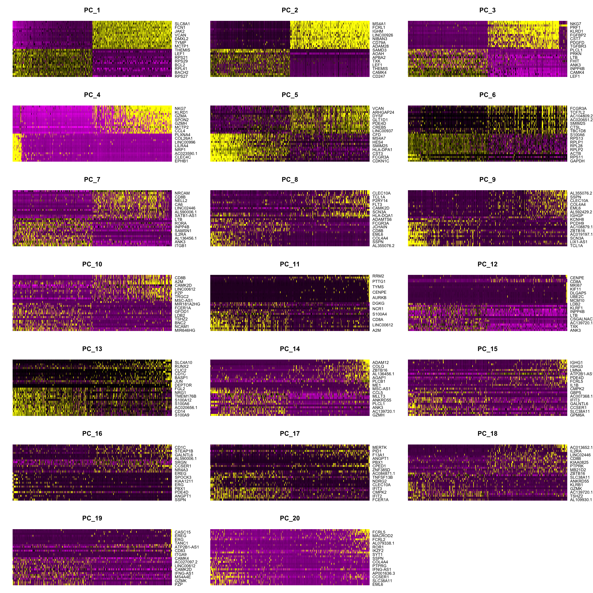
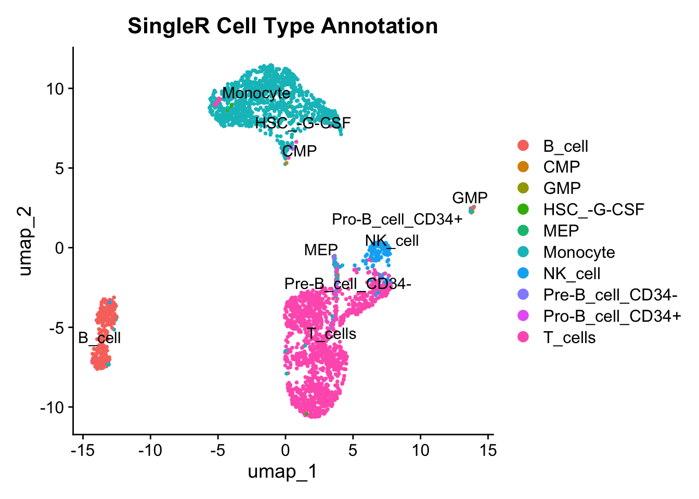

4 Vrije opdracht
4.1 Keuze onderwerp
Ik heb ervoor gekozen om mezelf te verdiepen in het analyseren van single-cell RNA-sequencingdata. In laboratoria waar onderzoek wordt gedaan naar cellen en subtypes is dit een belangrijke vaardigheid om te hebben. Ik ben op zoek naar een stage in de immunologie, en in veel gevallen betekent dat dat je met cellen werkt en onderzoek doet naar cellen.
4.2 Wat is single-cell RNA-sequencing?
Single-cell RNA-sequencing (scRNA-seq) is een methode om verschillende celtypes in een heterogeen monster of biopt te identificeren. Voor deze techniek zijn zowel de praktische uitvoering als de juiste analyse van de data essentieel om verschillende celtypes te kunnen identificeren.
In het praktische deel wordt een biopt of ander type monster (bijvoorbeeld hersenweefsel of bloed) gebruikt. Het biopt wordt gesuspendeerd zodat alle cellen los van elkaar in de oplossing zitten. Vervolgens is het de bedoeling dat al het RNA in één cel een unieke barcode krijgt en dat elk RNA-fragment in één cel een Unique Molecular Identifier (UMI) krijgt. De barcode kan worden gebruikt om al het RNA uit één cel te identificeren. De UMI is belangrijk om te bepalen hoeveel unieke fragmenten er zijn (na amplificatie door middel van PCR) en hoe vaak deze geamplificeerd zijn. Zonder UMI kun je bijvoorbeeld niet achterhalen of één fragment 100 keer is geamplificeerd tijdens PCR, of dat er al 100 van deze fragmenten aanwezig waren in de cel.
Deze barcode en UMI worden aan een cel gekoppeld via beads die gecoat zijn met RNA-sequenties die de barcode en UMI bevatten. Hiervoor is speciale microfluidische apparatuur ontwikkeld die ervoor zorgt dat één cel en één bead in een klein oliedruppeltje terechtkomen. In de druppel wordt de cel gelyseerd, binden de RNA-fragmenten van de cel aan de RNA-fragmenten op de bead en vindt reverse transcriptie plaats (cDNA-synthese). Vervolgens worden de fragmenten geamplificeerd door middel van PCR en tot slot worden de fragmenten gesequenced met bijvoorbeeld een Illumina-sequencer. Voor het sequencen krijgen de cDNA-fragmenten sequencing adapters die nodig zijn om te binden tijdens Illumina-sequencing. Dit is het einde van de praktische uitvoering van scRNA-seq. De rest van de analyse wordt digitaal uitgevoerd met bijvoorbeeld R.
4.3 Analyseren van single-cell RNA-sequencingdata in R
De twee bekendste packages in R die worden gebruikt voor scRNA-seq zijn Seurat en SingleCellExperiment (Bioconductor). Bioconductor is flexibeler dan Seurat en maakt deel uit van een heel ecosysteem van Bioconductor-functies. Seurat is specifiek ontwikkeld voor scRNA-seq en is eenvoudiger om te gebruiken, maar minder flexibel. Voor het leren analyseren van scRNA-seq is het makkelijker om eerst Seurat te leren en vervolgens bepaalde functies uit Bioconductor te gebruiken voor meer flexibiliteit. Daarom heb ik ervoor gekozen om eerst Seurat te leren en later in mijn loopbaan eventueel Bioconductor te leren.
4.4 Uitvoering op dataset
The dataset I have chosen to perform the analysis on is a PBMC datasest (Peripheral Blood Mononuclear Cells), found on 10x genomics. The cell contains 3k cells. I’ve first tried to use a dataset with 10k cells but my laptop did not have enough ram to handle this (specificaly when scaling the data).
4.4.1 Create a Seurat object
First a seurat object has to be creating using the data. This is an introduced datatype which stores results during the analysis. Because my data is of the .h5ad type I first need to convert it so its compatable with seurat. I’m using the SeuratDisk package for this.
# Only run first time using new data
untar("data/scrna_data/pbmc_unsorted_3k_filtered_feature_bc_matrix.tar.gz",
exdir = "data/scrna_data/")## 10X data contains more than one type and is being returned as a list containing matrices of each type.## Counts matrix provided is not sparse; vreating v5 assay in Seurat object4.4.2 Quality control
The next step is to do a quality control by applying filters to the dataset. These filters may include removing Cells with too few or too many genes detected and removing cells with high mitochondrial transcript percentage which may indicate stress. This last filter needs to be calculated manually.
First we check if the distribution of the different features is as expected. nFeature_RNA is the number of unique detected genes and nCount_RNA is the total number of transcripts. the percent.mt is the percentage of transcripts that come from mitochondrial genes per cell. A low percentage (0-20) indicates the cells are healthy.
The graph shows that both nFeature and nCount are high. If the transcript count is high that should mean that a lot of genes are detected aswell, meaning the dsitribution looks normal. Percent.mt is below 5 percent which indicates the cells did not experience stress.
# Calculate mitochondrial transcirpt percentage
pbmc[["percent.mt"]] <- PercentageFeatureSet(pbmc, pattern = "^MT[-\\.]")
# Visualise transcript distribution
VlnPlot(pbmc,
features = c("nFeature_RNA", "nCount_RNA", "percent.mt"),
ncol=3,
pt.size=0,
cols = "#41b6c4")
To decide where to cutoff the data the Ncount_RNA is plotted against the other two features. Most cells seem to have a mitochondrial transcript expresion below 10%. Because I dont want to cut out too many cells I’ve decided to choose 15% as the cutoff value. The correlation between nFeature and nCount is quite high (0.97) so not a lot of trimming needs to be done. I’ve decided for a cutoff value of 17k.
# Plot distribution
plot1 <- FeatureScatter(pbmc, feature1 = "nCount_RNA", feature2 = "percent.mt", cols = "#2c7fb8")
plot2 <- FeatureScatter(pbmc, feature1 = "nCount_RNA", feature2 = "nFeature_RNA", cols = "#a1dab4")
plot1 + plot2
4.4.3 Normalization
Because the number of RNA transcripts can differ per cell, the data has to be normalized so the RNA read count actually represents the expression of a gene compared to other cells.
## Normalizing layer: counts.Gene Expression## Normalizing layer: counts.Peaks4.4.4 Feature selection for following heterogeneity analysis
Different cell types can be identified based on their distinct expression signature. To do this you have to look at the genes which are most variably expressed across cells and filter out genes with low expression levels or genes which are expressed consistently across most celltypes. These highly variable genes are called features.
There is no rule of thumb to choose the feature count, but usually a featurecount between 2000 and 5000 will obtain good results. Because this is a well defined dataset, I’m choosing 2000 features whihc is seen as the standard.
pbmc[["RNA"]] <- JoinLayers(pbmc[["RNA"]])
pbmc <- FindVariableFeatures(pbmc, selection.method = "vst", nfeatures = 2000)## Finding variable features for layer countstop_features <- head(VariableFeatures(pbmc), 10)
plot1 <- VariableFeaturePlot(pbmc)
plot2 <- LabelPoints(plot = plot1, points = top_features, repel = TRUE)
plot1 + plot2
4.4.5 Data scaling
Because some genes are more highly expressed they will seem to contribute more to the analysis even though all genes should have the same contribution. To solve this the data gets scaled. Additionally unwanted sources of variation can be removed. It is advised to only do this after obtaining the first results and checking for unwated variation.
pbmc <- ScaleData(pbmc,
vars.to.regress = c("nFeature_RNA", "percent.mt"),
features = VariableFeatures(pbmc))## Regressing out nFeature_RNA, percent.mt## Centering and scaling data matrix4.4.6 Linear dimensionality reduction using principal component analysis (PCA)
Because scRNA data sets are so large, it is often preffered to perform a PCA early on to reduce the ammount of data that is worked with. A PCA summarises the information which is to be gathered from a dataset in so called principle components. Choosing the ammount of PC’s to move on with can be difficult but 15 or 20 is relatively standard.
## PC_ 1
## Positive: RPS27, CD247, BACH2, RPS18, RPL41, CAMK4, BCL2, RPL37A, RPS29, LTB
## RPS21, IL32, LEF1, RPL19, THEMIS, RPLP1, RPL10, RPL30, IL7R, INPP4B
## TRAC, RPS26, RPLP2, RPS12, RPS4X, RPS23, RPS14, RPL18A, RORA, TXK
## Negative: PLXDC2, SLC8A1, LRMDA, FCN1, NAMPT, JAK2, IRAK3, VCAN, TBXAS1, DMXL2
## RBM47, TYMP, SAT1, MCTP1, ZEB2, CSF3R, LRRK2, TNFAIP2, CLEC7A, CD36
## CYBB, GAB2, LYST, LYN, TLR2, AC020916.1, STX11, SLC11A1, LYZ, HCK
## PC_ 2
## Positive: CD247, IL32, CAMK4, INPP4B, THEMIS, IL7R, LEF1, TRAC, TXK, RORA
## APBA2, LINC01934, AOAH, CTSW, SAMD3, TRBC2, TRBC1, DPYD, NCALD, TAFA1
## MLLT3, NELL2, S100A4, RASGRF2, ITGA6, ARHGAP26, CCL5, PRF1, GPRIN3, KLRK1
## Negative: BANK1, MS4A1, PAX5, FCRL1, AFF3, IGHM, EBF1, LINC00926, OSBPL10, NIBAN3
## RALGPS2, CD79A, BLK, ADAM28, AP002075.1, CD22, COL19A1, IGHD, BCL11A, KHDRBS2
## IGKC, BLNK, COBLL1, PLEKHG1, WDFY4, GNG7, CD79B, CD74, AC120193.1, HLA-DQA1
## PC_ 3
## Positive: LEF1, BACH2, CAMK4, IL7R, INPP4B, NELL2, ANK3, NR3C2, FHIT, RASGRF2
## LTB, BCL2, PRKN, MAL, PLCL1, CSGALNACT1, ITGA6, AC139720.1, THEMIS, MLLT3
## PATJ, TSHZ2, CD27, AL589693.1, SLC2A3, CA6, SLC16A10, PCAT1, PTPRK, NRCAM
## Negative: GNLY, NKG7, GZMB, PRF1, GZMA, KLRD1, CCL5, FGFBP2, SPON2, CST7
## GZMH, PDGFD, ADGRG1, TGFBR3, KLRF1, CLIC3, CCL4, PPP2R2B, C1orf21, BNC2
## CTSW, EPHB1, IL2RB, A2M, PYHIN1, CLEC4C, NCR1, C12orf75, LINC00996, CUX2
## PC_ 4
## Positive: EPHB1, CUX2, CLEC4C, FAM160A1, AC023590.1, COL24A1, NRP1, LINC01478, LILRA4, LINC01374
## LINC00996, PTPRS, COL26A1, SCN9A, PLXNA4, TNFRSF21, PACSIN1, ITM2C, SLC35F3, P3H2
## RHEX, P2RY6, SLC7A11, PLD4, ZFAT, PHEX, SCN1A-AS1, SERPINF1, AC007381.1, PLEKHD1
## Negative: GNLY, NKG7, PRF1, KLRD1, CCL5, GZMA, CST7, SPON2, FGFBP2, GZMH
## ADGRG1, MCTP2, PDGFD, CCL4, TGFBR3, PPP2R2B, FCGR3A, MTSS1, KLRF1, BNC2
## CX3CR1, PYHIN1, C1orf21, CTSW, A2M, IL2RB, CD160, NCR1, SAMD3, MYBL1
## PC_ 5
## Positive: CDKN1C, IFITM3, FCGR3A, CSF1R, CST3, CALHM6, HLA-DPA1, AIF1, SMIM25, LST1
## HES4, SERPINA1, MS4A7, TCF7L2, CFD, AC104809.2, CCDC26, FGL2, IFI30, CTSL
## HMOX1, LRRC25, MTSS1, FMNL2, HLA-DPB1, PAPSS2, COTL1, FCER1G, MAFB, HLA-DRB5
## Negative: PLCB1, VCAN, VCAN-AS1, ARHGAP24, PADI4, DYSF, AC020916.1, GLT1D1, SLC2A3, PDE4D
## CSF3R, CREB5, ARHGAP26, LINC00937, JUN, IRS2, MEGF9, TREM1, MCTP2, MIR646HG
## ACSL1, CLMN, CR1, ST6GALNAC3, CRISPLD2, LIN7A, ANXA1, PRF1, NLRP12, GNLY
The heatmap below shows the correlation between genes and indirectly the different celtypes which are present in the dataset. The yellow and pink indicate the the variation that has been captured within a PC. PC_1 shows major variation between genes and thus cell types. Lower PC’s capture less variation but may still explain subtle variances necessary for distinguishing cell types
PCHeatmap(pbmc, dims = 1:20, cells = 500, balanced = TRUE, ncol = 3) +
scale_fill_gradientn(colors = moma.colors("Exter"))
## NULL4.4.7 Non-linear dimension reduction for visualization
PC’s offer a straight forward way to compress data without distorting it. The more PC’s you decide to keep the more information you retain. The ammount of PC’s you keep differs per dataset but its usually more then 10. This makes plotting the differences difficult because you can make a graph which contains 10+ dimensions. To overcome this issue an non-linear dimension reduction is performed to allow researcher to plot multiple PC’s in a single graph 2 dimensional graph. The most common reduction methods used are t-dsitributed Stochastic Neighbor Embedding (t-SNE) and Uniform Manifold Approximation and Projection (UMAP). Because the math is very difficult I won’t be immersing myself in the details.
I’ve chosen to keep 10-15 PC’s. The dataset doesnt have a lot of cells so I’d like to keep a bit more infromation.
## Warning: The default method for RunUMAP has changed from calling Python UMAP via reticulate to the R-native UWOT using the cosine metric
## To use Python UMAP via reticulate, set umap.method to 'umap-learn' and metric to 'correlation'
## This message will be shown once per session## 23:46:59 UMAP embedding parameters a = 0.9922 b = 1.112## 23:46:59 Read 2962 rows and found 10 numeric columns## 23:46:59 Using Annoy for neighbor search, n_neighbors = 30## 23:46:59 Building Annoy index with metric = cosine, n_trees = 50## 0% 10 20 30 40 50 60 70 80 90 100%## [----|----|----|----|----|----|----|----|----|----|## **************************************************|
## 23:47:00 Writing NN index file to temp file /var/folders/td/1pykh40d3cl7xxlyzwjgyr2m0000gn/T//RtmpWNcfEy/file11bb651949e49
## 23:47:00 Searching Annoy index using 1 thread, search_k = 3000
## 23:47:01 Annoy recall = 100%
## 23:47:02 Commencing smooth kNN distance calibration using 1 thread with target n_neighbors = 30
## 23:47:03 Initializing from normalized Laplacian + noise (using RSpectra)
## 23:47:03 Commencing optimization for 500 epochs, with 119704 positive edges
## 23:47:03 Using rng type: pcg
## 23:47:06 Optimization finished
The ultimate goal is to visualise the different cell types within a sample. Both plots do a good job in showing distinct groups of cells (in a later stage of the analysis the present cell types will be pinpointed within the graph). The only way to decide which graph is the best choice for your data is to plot them both.
Now we will start distinguishing the different celltypes present in the sample. We start by looking at the expression of certain genes by creating a feature plot. The genes you should choose depend on the cells you expect to be in the data, and which cells you want to distinguish. For PBMC data sets the following genes are comonly used:
| Gene | Cell_Type |
|---|---|
| MS4A1 | B cells |
| GNLY | NK cells |
| CD3E | T cells |
| CD14 | CD14 Monocytes |
| FCER1A | Dendritic cells |
| FCGR3A | FCGR3A Monocytes |
| LYZ | CD14 Monocytes |
| PPBP | Platelets |
Feature plots show which genes are highly expressed in which area of the TSNE/UMAP plots. In the table above we can see that CD14 is expressed in CD14 monocytes. If you look at the feature plot for CD14 we can see most cells expressing this gene are located in the upperm most cluster.

4.4.8 Cluster the cells
Feature plots are great for visualising different cell groups if you already know what you are looking for (by choosing which genes to visualise). If you have no expectations, or if you just want to get an indication of how many groups are in your data set, you can Cluster the cell (k) a pair of cells has based on the PC values. The higher the k the more likely two cells belong to the same group.
The next step is to find communities within the data (groups of cells which are more closely related to eachother then other groups). This is done by the Louvain algorithm.
The resolution of the clusters can be tweaked to either show fewer but broader clusters or smaller clusters which will contain more subtypes.
plot1 <- DimPlot(pbmc, reduction = "tsne", label = TRUE,
cols = moma.colors("Ernst", n = length(unique(pbmc$seurat_clusters))))
plot2 <- DimPlot(pbmc, reduction = "umap", label = TRUE,
cols = moma.colors("Ernst", n = length(unique(pbmc$seurat_clusters))))
plot1 + plot2 ### Annotate cell clusters
Different groups of cells have been identified by clustering them. But what celtypes they represent isn’t clear yet. For this we have to look at the gene expression of each group. You can look at very specific genes of which you know they correlate to a specific cell type. Or you look at highly expressed genes in each group and compare this to existing literature or existing reference data. The last option is probably the easiest, if possible. The markers used here are commonly used in PBMC datasets
### Annotate cell clusters
Different groups of cells have been identified by clustering them. But what celtypes they represent isn’t clear yet. For this we have to look at the gene expression of each group. You can look at very specific genes of which you know they correlate to a specific cell type. Or you look at highly expressed genes in each group and compare this to existing literature or existing reference data. The last option is probably the easiest, if possible. The markers used here are commonly used in PBMC datasets
markers <- c("MS4A1", "GNLY", "CD3E", "CD14", "FCER1A", "FCGR3A", "LYZ", "PPBP",
"IL7R", "CCR7", "S100A4", "CD8A", "MS4A7", "CST3", "TCL1A", "CD27",
"NKG7", "CCL5", "GZMK", "GZMH", "CD28", "ITGB1", "TREM1", "CDKN1C")
DoHeatmap(pbmc, features = markers) + NoLegend() Some variantion within each cluster is to be expected, but the cells within each cluster look quite similar as shown by the pattern in gene expression. This confirms the homogeneity of each cluster.
Some variantion within each cluster is to be expected, but the cells within each cluster look quite similar as shown by the pattern in gene expression. This confirms the homogeneity of each cluster.
Annotation can be made easier by first performing a differential expression analysis which looks at unique highly differentially expressed genes in each cluster. In this case the decision was made to look for 2 highly differentially expressed genes per cluster.
cl_markers <- FindAllMarkers(pbmc, only.pos = TRUE, min.pct = 0.25, logfc.threshold = log(1.2))
cl_markers %>% group_by(cluster) %>% top_n(n = 2, wt = avg_log2FC)top10_cl_markers <- cl_markers %>% group_by(cluster) %>% top_n(n = 10, wt = avg_log2FC)
DoHeatmap(pbmc, features = top10_cl_markers$gene) + NoLegend()## Warning in DoHeatmap(pbmc, features = top10_cl_markers$gene): The following
## features were omitted as they were not found in the scale.data layer for the
## RNA assay: EPHA2, SLC12A3, SH3BP4, SLC41A2, MZT2B, TTN, SOD1, CCDC7, DENND2D,
## MDN1, DOCK9, ABCD2, MGAT4A, NMUR1, SH2D1B, RBM3, GIMAP4, SLA, MT-ND2, MT-ND1,
## RACK1, AL158212.2, FCRL6, EOMES, LRRN3, GATA3, CD28, LINC01550, LEF1-AS1,
## TRABD2A, STAB1, FCGR1A
Using SingleR the annotation of the cells can be performed. SingleR used a refference data set and compares it to the dataset I’m working with. In the graph you can see the detected celltypes.
ref <- celldex::HumanPrimaryCellAtlasData()
pred <- SingleR(test = as.SingleCellExperiment(pbmc), ref = ref, labels = ref$label.main)
pbmc$singler_labels <- pred$labels# Plot with SingleR labels
DimPlot(pbmc, reduction = "umap", group.by = "singler_labels",
label = TRUE, repel = TRUE) +
ggtitle("SingleR Cell Type Annotation")
This table shows how many of each cell type has been detected in each cluster. By looking at which cell type has the highest frequency in each cluster you can identify each cluster.
##
## B_cell CMP GMP HSC_-G-CSF MEP Monocyte NK_cell Pre-B_cell_CD34-
## 0 4 0 0 4 0 450 1 0
## 1 0 0 0 0 0 432 0 0
## 2 0 1 0 0 0 4 0 0
## 3 0 0 0 0 0 0 0 0
## 4 0 0 0 1 0 0 0 0
## 5 1 0 0 0 0 0 32 0
## 6 147 0 0 0 0 3 1 0
## 7 0 0 0 0 0 145 0 0
## 8 133 0 0 0 0 0 0 0
## 9 2 0 0 2 1 26 11 21
## 10 0 0 0 0 0 0 99 0
## 11 0 0 0 0 0 1 0 1
## 12 0 0 1 0 0 38 0 0
## 13 9 0 3 0 0 12 2 0
##
## Pro-B_cell_CD34+ T_cells
## 0 0 8
## 1 0 0
## 2 0 399
## 3 0 335
## 4 0 331
## 5 0 199
## 6 0 1
## 7 0 0
## 8 0 3
## 9 0 40
## 10 0 1
## 11 0 55
## 12 0 0
## 13 2 0pbmc <- SetIdent(pbmc, value = pbmc$seurat_clusters)
pbmc <- RenameIdents(pbmc,
"0" = "Monocyte",
"1" = "Monocyte",
"2" = "T cells",
"3" = "T cells",
"4" = "T cells",
"5" = "T cells",
"6" = "B cells",
"7" = "Monocyte",
"8" = "B cells",
"9" = "Mixed",
"10" = "NK cells",
"11" = "T cells",
"12" = "Monocyte",
"13" = "Mixed"
)DimPlot(pbmc, reduction = "umap", label = TRUE, repel = TRUE,
cols = moma.colors("Ernst", n = length(unique(Idents(pbmc))))) +
ggtitle("PBMC Cell Type Annotation")
Alternatively I have tried to feed the output of of FindAllMarkers(), which shows the highly differentially expressed genes which are unique per cluster, into claude AI. I asked it to annotate each cluster based on the output. This way i was able to obtain a more detailed annotation of the clusters. Using AI for cluster annotation might be an interesting alternative to the laborious manual annotating method.
pbmc <- SetIdent(pbmc, value = pbmc$seurat_clusters)
pbmc <- RenameIdents(pbmc,
"0" = "CD14 Monocytes",
"1" = "Intermediate Monocytes",
"2" = "Naive T cells",
"3" = "Memory T cells",
"4" = "CD8 T cells",
"5" = "Effector T cells",
"6" = "B cells",
"7" = "FCGR3A Monocytes",
"8" = "Naive B cells",
"9" = "Unknown",
"10" = "NK cells",
"11" = "Unknown",
"12" = "Dendritic cells",
"13" = "Rare/Unknown"
)DimPlot(pbmc, reduction = "umap", label = TRUE, repel = TRUE,
cols = moma.colors("Ernst", n = length(levels(pbmc)))) +
ggtitle("PBMC Cell Type Annotation")